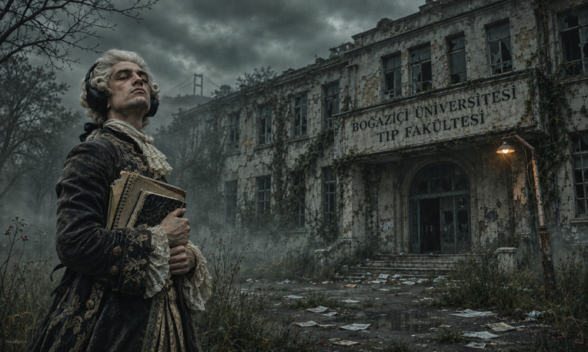

Bölüm
Hayata Yönelim
Hayata Yönelim
Bir Temsil ve Gösteri Olarak Şiddet I
Okullar, toplumdaki çatışmaları, hiyerarşileri ve şiddeti de içerisinde taşıyan; toplumsal hayatın küçük birer örneğidir. Öğretmenini bıçaklayan öğrenciler, okul çıkışında kavga eden çeteler, müdüre saldıran veliler bu…
B. Elçin Ulucan ve Mustafa Selek · 19 Kasım 2026 · 4 dk okuma

Hayata Yönelim
Cehaletin Altın Çağı
“Hocam, Polibomlar Sınavda Çıkacak mı?” Eski nesiller bilmediği bir konu olduğunda hafifçe kızarır, başını öne eğer ve susardı. Şimdiki nesil ise bilmediği konunun kürsüsünü kurup üzerine bir de konferans veriyor.…
Bilge Terim · 14 Kasım 2026 · 3 dk okuma
